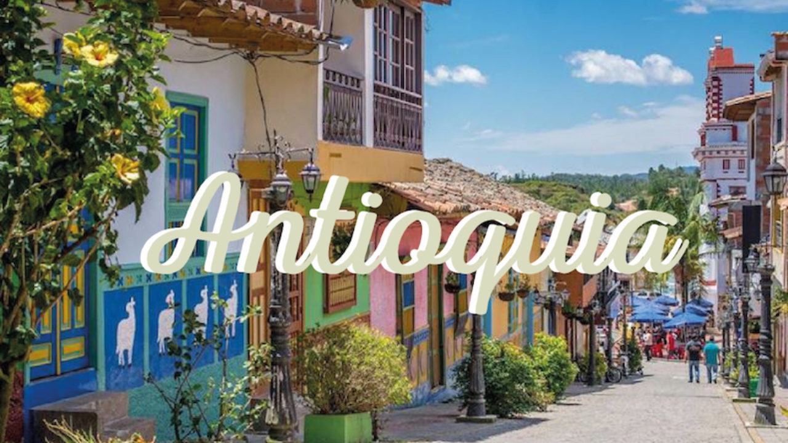

Departamento

Sitios turísticos
- Pueblito Paisa en Medellín
- Guatapé y la Piedra del Peñol
- Jardín botanico
- Plaza botero
- El castillo museum and gardens
Comida típica
- Bandeja Paisa
- Arepa Antioqueña
- Sancocho Antioqueño
- Fríjoles con chicharrón
- Mazamorra con bocadillo
Información económica
Antioquia es uno de los departamentos más productivos de Colombia.
Su economía se basa en la industria, el comercio, los servicios, el turismo
y la agricultura (especialmente el café).
- Servicios: 40% del empleo
- Industria: 25% del empleo
- Comercio: 15% del empleo
- Agricultura: 10% del empleo
- Turismo: 10% del empleo
Volver al mapa